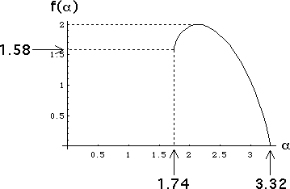

| 5. (a) The highest probability length N address squares occur where every probability factor is 0.3, so the highest probability is 0.3N. |
| (b) The corresponding α value is |
| (c) The set of points having this α value is the set of points having addresses not containing a 4, that is, the gasket determined by transformations 1, 2, and 3. |
| (d) The lowest probability length N address squares occur where every probability factor is 0.1, so the highest probability is 0.1N. |
| (e) The corresponding α value is |
| (f) The set of all points having this α value is the set of points having addresses containing only 4s, that is, a single point. |
| (g) Here is a sketch of the f(α) curve. |
|  |
| The minimum and maximum values of α, approximately 1.74 and 3.32, were computed in (b) and (e). |
| In (c) we saw that for the minimum value αmin, the set Eαmin is a gasket, hence |
| f(αmin) = dim(Eαmin) = Log(3)/Log(2), approximately 1.58. |
| In (f) we saw that for the maximum value of αmax, the set Eαmax is a point, hence |
| f(αmax) = dim(Eαmax) = 0. |
| Finally, the maximum value of f(α) is 2, because the four transformations generate a filled-in square. |
Return to Homework 5 Practice.